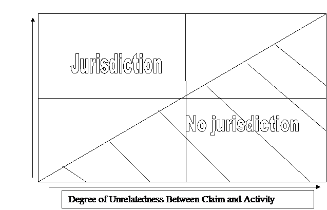

Civil
Procedure Class Notes
We left off almost completing Helicopteros.
In
this case, the Supreme Court gives us its only statement on the distinction
between general and specific jurisdiction.
We knew that in Perkins there were enough contacts, while in Rosenberg
there were not enough contacts.
In Helicopteros, the four contacts
mentioned are not enough for jurisdiction.
The
problem area is what comes inbetween these cases.
Are
specific and general jurisdiction different things or part of the same
continuum? Recall our diagram…(finish it
later)

For
specific jurisdiction, we have minimum contacts and fair play. For general jurisdiction, we continuous and
systematic contacts, but is there a parallel fair play standard in general
jurisdiction? You should argue the fair
play aspect even when dealing with general jurisdiction.
“Arguing
more is never going to hurt you.”
D-I-V-O-R-C-E…Fairman
is extremely proud of himself.
What’s
going on? There’s a divorce. The Burnhams had
lived in New Jersey with their kids when they got divorced. The wife moves to California with her
kids. They agree that she will file for
divorce on the basis of “irreconcilable differences”. Mr. Burnham instead files for divorce on the
grounds of “desertion”. This is
slimy! This will have an impact on the
standing of the parties later.
Why
isn’t the divorce tried in New Jersey?
Mr. Burnham never serves Mrs. Burnham.
Mrs.
Burnham files for divorce in California under “irreconcilable differences”, as
planned.
Mr.
Burnham goes to visit California and Mrs. Burnham serves him process. He is the first person served in the divorce
suit. It goes to California trial
court. They find that California has
jurisdiction because he was personally served process in California.
Can
the state of California exercise personal jurisdiction over an out-of-state
defendant based on personal service in California? Yes. But why?
There
aren’t five votes for anything here except the judgment. They agree that the state of California can
exercise jurisdiction, but they’re so divided that they can’t write a single
majority opinion on the reason why. They
get four votes at the most.
This
is a good review of everything we’ve looked at up to this point in
jurisdiction. Yeazell views this as the
“end case” of jurisdiction.
We
have one new justice from the Asahi court, Justice
Kennedy.
The
first opinion is Scalia’s. It appears to
be the opinion of the Court, however, it doesn’t get five votes.
The
first four sections get four votes from Scalia, Rehnquist, Kennedy, and White.
The
“Shaffer” and “Slam Brennan” parts of
the opinion only get Scalia, Rehnquist, and Kennedy but not White.
Brennan
writes a concurring opinion, and O’Connor, Marshall, and Blackmun
sign on.
Then
we get separate opinions from Stevens and White.
What
do we make of this?
The
rule is eazy.
If we serve you in our state, we gotcha.
Why
does Scalia believe that California has jurisdiction? He looks at historical precedent. Physical presence constitutes jurisdiction
going all the way back to English law.
It’s
tradition!
It’s
always been this way, so it must still be this way. Scalia also gives legal arguments. Scalia says that minimum contacts analysis
only applies to absent defendants.
Scalia claims that this is clear from the wording of the Shoe standard.
We
can go back to Pennoyer. What else?
Isn’t
it true that “Shoe Rules Everything Around Me” from Shaffer? That’s the case that said “we’re
going to do in rem actions according to Shoe.” But Scalia says that “all” does not really
mean “all”. Scalia claims Shaffer only applied to quasi in rem.
White
disagrees with this statement about Shaffer, and he doesn’t like the
harsh language used to attack Brennan.
He says that it’s not that Shaffer doesn’t apply, it’s just that
if they were to apply Shaffer they would get the same result.
What
about Brennan and his droogs? He says we should use Shoe and Shaffer. He says “we meant what we said in Shoe and
Shaffer.” He wants to apply
minimum contacts and fair play.
Then
he gets on shaky ground. It doesn’t seem
unfair to subject the husband to jurisdiction, but the contacts part is
troubling.
Brennan
says that he avails himself of the protection of the state’s emergency
services. He also is free to travel in
California. He might have also bought
stuff there. Whatever your concept of
“minimum” is, you probably can’t get any more minimal than that.
Scalia
says that if we take these to be contacts, pretty much anything could be
contacts. Thus, he says, it’s easier to
just use a black-and-white rule.
What’s
the problem with applying contacts analysis?
If the contacts cited are this weak, it would be easy to find the same
kind of contacts for an out-of-state defendant.
If we used this sort of analysis with Asahi, you would probably
find that California has jurisdiction.
Maybe
Brennan wanted to preserve the rule but bent it in this case to get a result he
thought was just. If Burnham never came
to California, it would be really hard to get jurisdiction over him.
Why
didn’t the Court consider the relatedness of Burnham’s contacts to the
claim? What business was he attending to
in California?
What
if we had applied Rosenberg here?
There were a lot more contacts in Rosenberg, but no jurisdiction.
So
Scalia doesn’t like the minimum contacts test.
The
Court has an idea of what’s fair and unfair, but they can’t decide how to
justify it.
Stevens
agrees with everybody and says it’s an easy case.
The
rule is: if you’re temporarily in the forum, and I can serve you, I gotcha!
If
the president of a business is in my state, I can serve him and get
jurisdiction, but I wouldn’t necessarily have jurisdiction over his company.
Burnham doesn’t answer the question
of whether you can get at a corporation through one of their executives.
On
Monday, we’ll look at notes on airplanes and fraud.